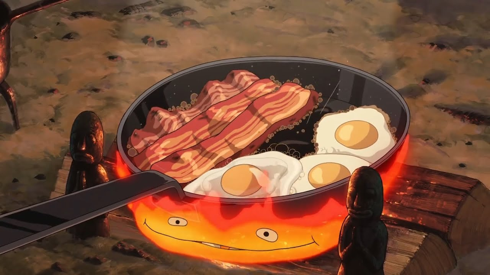

Howl's Breakfast (Howl's Moving Castle)
Back to Recipes

The iconic breakfast from Howl's Moving Castle. Recipe by
Sylvia Wakana.
Ingredients
3 slices thick cut bacon
4 large eggs
1 loaf bread
1 slab cheese
Instructions
Heat a large pan over medium-high heat.
Add 3 slices of bacon to the pan and cook until crispy. Push them to one side of the pan.
Reduce the heat to medium. Crack 4 eggs directly into the pan next to the bacon. Cook until sunny side up eggs are to your preference.
Remove the pan from the heat.
Cut desired amount off from the loaf of bread.
Serve the bacon, eggs, bread, and cheese family-style.